사회조사분석사-2급 (2010-03-07 기출문제)
1과목: 조사방법론 I
1. 다음 중 연구하려고 하는 문제의 핵심적인 요소들을 분명히 알지 못할 때 질문지 작성의 전 단계에서 실시하는 비지시적 방식의 조사는?
- 사전조사(pretest)
- 파일럿조사(pilot survey)
- 본조사(main survey)
- 사례조사(case study)
(정답률: 52%)

2. 인과적 설명과정에서 발생할 수 있는 여러 가지 오류 중 구체적인 개발 사례에 근거하여 거시적 사건을 설명하는 경우에 발생하는 오류는?
- 생태학적 오류
- 개인주의적 오류
- 비표본 오류
- 체계적 오류
(정답률: 48%)
3. 기술적(descriptive) 조사에 대한 설명으로 틀린 것은?
- 현상에 대한 탐구와 명료화를 주목적으로 한다.
- 계획, 모니터링, 평가에 필요한 자료를 산출하기 위하여 자주 사용된다.
- 사회현상이 야기된 원인과 결과를 밝혀 정확히 기술하는 것이다.
- 행정실무자와 정책분석가들에게 가장 기본적인 조사도구이다.
(정답률: 49%)
4. 다음 중 귀납법에 관한 설명으로 틀린 것은?
- 귀납적 논리의 마지막 단계에서는 가설과 관찰결과를 비교하게 된다.
- 관찰된 사실 중에서 공통적인 유형을 객관적으로 증명하기 위하여 통계적 분석이 요구된다.
- 특수한(specific) 사실을 전제로 하여 일반적(general) 진리 또는 원리로서의 결론을 내리는 방법이다.
- 경험의 세계에서 관찰된 많은 사실들이 공통적인 유형으로 전개되는 것을 발견하고 이들의 유형을 객관적인 수준에서 증명하는 것이다.
(정답률: 48%)
5. 다음 중 탐색적 조사방법(exploratory research)에 해당하지 않는 것은?
- 유관분야의 관련문헌 조사
- 연구문제에 정통한 경험자를 대상으로 한 조사
- 변수간의 상관관계에 관한 조사
- 통찰력을 얻을 수 있는 소수의 사례조사
(정답률: 55%)
6. 다음 중 폐쇄형 응답식 설문조사에서 응답을 얻기 위해 사용하는 방식이 아닌 것은?
- 척도형
- 선택형
- 서열형
- 논술형
(정답률: 67%)
7. 성전환에 대한 일반 국민의 의식을 조사하는 설문지를 작성할 때 가장 주의해야 할 사항은?
- 규범적 응답의 억제
- 복잡한 질문의 회피
- 평이한 언어의 사용
- 즉시적 응답 유도
(정답률: 61%)
8. 질문지의 개별항목을 완성할 때 주의사항으로 옳은 것은?
- 다양한 정보의 획득을 위해 한 질문에 2가지 이상의 요소가 포함되는 것이 바람직하다.
- 질문의 용어는 응답자 모두가 이해할 수 있도록 이해력이 낮은 사람의 수준에 맞춰야 한다.
- 사회적․윤리적 연구에서는 긍정․부정적 의미의 문항은 응답자가 직접 기술하는 문항으로 구성해야 타당도가 높아진다.
- 질문지의 용이한 작성을 위해 일정한 방향을 유도하는 문항을 가지는 것이 필요하다.
(정답률: 60%)
9. 어떤 연구에서 “미국의 도시 중 동양인의 비율이 높은 도시가 동양인의 비율이 낮은 도시보다 정신질환 발병률이 높다”는 결과를 얻었을 때, 이러한 연구결과로부터 “백인 정신질환자보다 동양인 정신질환자가 더 많다”고 결론을 내리는 오류를 무엇이라고 하는가?
- 조건화 오류
- 생태학적 오류
- 개인주의적 오류
- 일반화 오류
(정답률: 56%)
10. 우편조사의 특성과 가장 거리가 먼 것은?
- 회수율이 낮은 경우 표본의 대표성을 확보하기 어렵다.
- 응답자에 대한 익명성과 비밀유지에 대한 확신을 부여하기 쉽다.
- 표본으로 추출된 대상자가 직접 응답했는지 확인하기 어렵다.
- 일반적으로 조사에 필요한 시간이 전화조사보다는 길지만 면접조사보다는 짧다.
(정답률: 64%)
11. 다음중 표준화 면접의 장점과 가장 거리가 먼 것은?
- 신뢰도가 높다.
- 타당도가 높다.
- 면접결과의 수치화가 용이하다.
- 정보의 비교가 가능하다.
(정답률: 59%)
12. 다음 중 설문지의 지시문에 들어가야 할 내용이 아닌 것은?
- 연구목적
- 연구자 신분
- 응답자 특성
- 표집방법
(정답률: 56%)
13. 다음 중 가설의 평가기준으로 적합하지 않은 것은?
- 가설은 경험적으로 검증할 수 있어야 한다.
- 동일 연구분야의 다른 가설이나 이론과 연관이 없어야 한다.
- 가설은 논리적으로 간결하여야 한다.
- 가설은 동의반복적(tautological)이어서는 안된다.
(정답률: 58%)
14. 면접조사를 시행함에 있어 유의해야 할 사항으로 틀린 것은?
- 응답자로 하여금 면접자와의 상호작용이 유쾌하며 만족스러운 것이 될 것이라고 느끼도록 하여야 한다.
- 응답자로 하여금 그 조사를 가치 있는 것으로 생각하도록 해야 한다.
- 응답자에게 연구자의 가치와 생각을 알려준다.
- 조사표에 담긴 질문내용을 벗어나는 내용은 질문을 해서는 안된다.
(정답률: 71%)
15. 사후실험설계(ex-post facto research design)의 특징으로 틀린 것은?
- 가설의 실제적 가치 및 현실성을 높일 수 있다.
- 순수실험설계에 비하여 변수들간의 인과관계를 명확히 밝힐수 있다.
- 분석 및 해석에 편파적이거나 근시안적 관점에서 벗어날 수 있다.
- 조사의 과정 및 결과가 객관적이며 조사를 위해 투입되는 시간 및 비용을 줄일 수 있다.
(정답률: 54%)
16. 다음 중 참여관찰의 단점이 아닌 것은?
- 자연스러운 상태를 관찰하기 어렵다.
- 객관성을 잃기 쉽다.
- 집단상황에 익숙해지면 관찰대상을 놓칠 수 있다.
- 수집한 자료의 표준화가 어렵다.
(정답률: 59%)
17. 연구에서 관찰은 단 한번에 이루어지기도 하며 경우에 따라서는 상담기간동안 이루어지기도 한다. 다음 중 시간적 범위가 다른 것은?
- 동류집단연구(cohort study)
- 패널연구(panel study)
- 추이연구(trend study)
- 횡단연구(cross-sectional study)
(정답률: 59%)
18. 우편조사의 응답률에 영향을 미치는 요인과 가장 거리가 먼 것은?
- 응답집단의 동질성
- 응답자의 지역적 범위
- 질문지의 양식 및 우송방법
- 연구주관기관 및 지원단체의 성격
(정답률: 52%)
19. 자신의 신분을 밝히지 않은 채 자연스럽게 일어나는 사회적 과정에 참여하는 관찰자의 역할은?
- 완전참여자
- 완전관찰자
- 참여자적 관찰자
- 관찰자적 참여자
(정답률: 52%)
20. 다항선택식 질문(복수응답)의 주의할 점이 아닌 것은?
- 선택항목은 논리적이어야 한다.
- 각 선택항목이 너무 유사하거나 같으면 좋지 않다.
- 선택항목은 하나의 차원에서 제시되어야 한다.
- 선택항목은 서로 배타적이지 않고 구체적이어야 한다.
(정답률: 59%)
21. 다음 중 과학적 연구방법의 기본과정에 대한 설명으로 틀린 것은?
- 불완전한 진리는 공격받으므로, 과학적으로 연구된 진리는 절대적이다.
- 경험과 관찰은 객관적 현상에 대한 타당한 추론으로 지식의 원천이다.
- 자명한 지식은 없으며, 과학적으로 검증되어야 한다.
- 과학적 설명은 확률조건인과 모형의 관점에서 이루어진다.
(정답률: 55%)
22. 개인의 사생활(privacy)보호와 면접조사가 어려울 때 실시할 수 있는 조사방법으로 가장 적합한 것은?
- 조사원을 이용하여 질문지를 배포하고 우편으로 회수한다.
- 조사원을 이용하여 질문지를 배포하고 전화로 조사한다.
- 우편으로 질문지를 배포하고 전화로 조사한다.
- 조사대상자들을 한 자리에 모아 질문지를 배포하고 전화로 조사한다.
(정답률: 44%)
23. 다음 중 개방형 질문의 장점이 아닌 것은?
- 응답 가능한 모든 응답의 범주를 모를 때 적합하다.
- 응답자가 어떻게 응답하는가를 탐색적으로 살펴보고자 할때 적합하다.
- 개인의 사생활이나 소득수준과 같이 밝히기를 꺼리는 민감한 주제에 보다 적합하다.
- 몇 개의 범주로 압축시킬 수 없을 정도로 쟁점이 복합적일 때 적합하다.
(정답률: 68%)
24. 인터넷 설문조사의 특징에 관한 설명으로 틀린 것은?
- 설문응답이 편리하다.
- 표본수가 많아지면 추가비용이 많이 든다.
- 설문에 대한 응답을 빨리 회수할 수 있다.
- 인터뷰 비용 없이 설문응답자와 상호작용할 수 있다.
(정답률: 73%)
25. 다음과 같은 특징을 지닌 연구방법은?
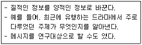
- 투사법
- 내용분석법
- 질적연구법
- 사회성측정법
(정답률: 65%)
26. 조사방법별 장․단점에 관한 설명으로 틀린 것은?
- 집단조사 - 조사조건을 표준화하기 용이하다.
- 우편조사 - 비용이 적게 들지만, 일반적으로 설문 회수율이 낮다.
- 전화조사 - 다양한 조사내용을 상세하고 신속하게 조사할 수 있다.
- 면접조사 - 래포(rapport)가 제대로 형성되지 못하면 오류가 발생 할 수 있다.
(정답률: 46%)
27. 설문조사로 얻고자 하는 정보의 종류가 결정된 이후의 질문지 작성과정을 바르게 나열한 것은?
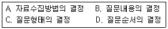
- A → B → C → D
- B → C → D → A
- B → D → C → A
- C → A → B → D
(정답률: 48%)
28. 다음 중 작업가설로 가장 적합한 것은?
- 한국사회는 양극화되고 있다.
- 대학생들은 독서를 많이 해야 한다.
- 경제성장은 사회혼란을 심화시킬 수 있다.
- 소득수준이 높아질수록 생활에 대한 만족도는 높아진다.
(정답률: 61%)
29. 다음은 무엇에 관한 설명인가?
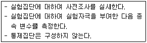
- 단일집단 사후측정설계(one group posttest-only design)
- 집단비교설계(static-group comparison)
- 솔로몬 4집단설계(solomon four-group design)
- 단일집단 사전사후측정설계(one-group pretest-posttest design)
(정답률: 65%)
30. 연구자가 검정요인(test factor)을 연구에 도입하는 가장 큰 이유는?
- 인과성의 확인
- 측정의 타당도 향상
- 측정의 신뢰도 향상
- 일반화 가능성의 증대
(정답률: 30%)
2과목: 조사방법론 II
31. 측정오차의 발생원인과 가장 거리가 먼 것은?
- 통계분석기법
- 측정방법 자체의 문제
- 측정시점에 따른 측정대상자의 변화
- 측정시점의 환경요인
(정답률: 51%)
32. 측정도구의 타당도 평가방법에 대한 설명으로 틀린 것은?
- 한 측정치를 기준으로 다른 측정치와의 상관관계를 추정한다.
- 크론바하 알파값을 산출하여 문항상호간의 일관성을 측정한다.
- 내용타당도는 점수 또는 척도가 일반화하려고 하는 개념을 어느 정도 잘 반영해주는 가를 의미한다.
- 개념타당도는 측정하고자 하는 개념이 실제로 적절하게 측정되었는가를 의미한다.
(정답률: 43%)
33. 동일대상에 대해 측정도구를 반복해서 적용하였을 때 어느 정도 동일한 결과가 나오는 가를 의미하는 것은?
- 신뢰도
- 타당도
- 유의도
- 정확도
(정답률: 58%)
34. 크론바하 알파값(cronbach's alpha)으로 계산하는 신뢰성 측정유형은?
- 재검사법
- 반분법
- 복수양식법
- 내적일관성법
(정답률: 55%)
35. 다음 중 크론바하의 알파값에 대한 설명으로 틀린 것은?
- 표준화된 크론바하의 알파값은 0에서 1까지 이르는 값으로 존재한다.
- 문항 간의 평균상관계수가 높을수록 크론바하의 알파값도 커진다.
- 문항의 수가 적을수록 크론바하의 알파값은 커진다.
- 크론바하의 알파값이 클수록 신뢰도가 높다고 인정된다.
(정답률: 54%)
36. 거트만척도에서 응답자의 응답이 이상적인 패턴에 얼마나 가까운가를 측정하는 것은?
- 단일차원계수
- 스캘로그램
- 재생가능계수
- 최소오차계수
(정답률: 49%)
37. 지수와 척도에 관한 설명으로 틀린 것은?
- 지수와 척도 모두 변수의 합성측정이다.
- 척도와 지수 모두 변수에 대한 서열측정이다.
- 지수점수는 척도점수보다 더 많은 정보를 전달한다.
- 척도는 동일한 변수의 속성들 가운데서 그 강도의 차이를 이용하여 구별되는 응답 유형을 밝혀낸다.
(정답률: 40%)
38. 개념이 가는 본질의 뜻을 몇 개의 차원에 따라 측정함으로써 태도의 변화를 정확하게 파악하고자 한 척도는?
- Q 분류법(Q methodology)
- 리커트척도(likert scale)
- 소시오메트리법(sociometry method)
- 보가더스 사회거리 척도(bogardus social distance scale)
(정답률: 15%)
39. 측정도구가 “잴 것을 제대로 잰다” 는 것은 무엇을 의미하는 말인가?
- 신뢰도
- 타당도
- 안정도
- 일관도
(정답률: 54%)
40. 1,500명의 표본을 대상으로 국민들의 소비성향 조사를 하려할 때 최소의 비용으로 표집 오차를 가장 효과적으로 감소시킬 수 있는 방법은?
- 표본수를 10배로 증가 시킨다.
- 모집단의 동질성 확보를 위한 연구를 한다.
- 조사요원의 증원과 이들에 대한 훈련을 철저히 한다.
- 전 국민을 대상으로 철저한 단순 무작위 표집을 실행한다.
(정답률: 42%)
41. 확률표집방법(probability sampling method)과 비확률표집(non-probability sampling method)방법에 관한 설명으로 틀린 것은?
- 확률표집방법은 구성원들의 명단이 기재된 표본 프레임(sample frame)이 있다.
- 확률표집방법은 조사대상이 뽑힐 확률을 미리 알아서 표보의 모집단의 대표성을 산출 할 수 있다.
- 비교적 정확한 표본 프레임의 입수가 가능하다면 확률표집방법보다는 비확률표집방법을 이용하는 것이 바람직하다.
- 비확률표집방법은 조사결과에 포함될 수 있는 오류에 대한 정확한 정보를 얻을 수 없다.
(정답률: 58%)
42. 질적변수(qualitative variable)와 양적변수(quantitative variable)에 관한 설명으로 틀린 것은?
- 성별, 종교, 직업, 학력 등을 나타내는 변수는 질적변수이다.
- 질적변수에서 양적변수로의 변환은 불가능하다.
- 계량적 변수 혹은 메트릭(metric)변수라고 불리는 것은 양적변수이다.
- 양적변수는 몸무게나 키와 같은 이산변수(discrete variable)와 자동차의 판매대수와 같은 연속변수(continuous variable)로 나누어진다.
(정답률: 38%)
43. 다음 중 모집단을 정확하게 규정하기 위해 고려해야 하는 요소가 아닌 것은?
- 경제성
- 표본단위
- 조사지역
- 조사기간
(정답률: 43%)
44. 다음 중 전수조사와 가장 관계가 깊은 것은?
- 사전조사
- 인구주택총조사
- 집단조사
- 사후조사
(정답률: 67%)
45. 전문직에 종사하는 남성근로자를 대상으로 하는 사회조사에서 변수가 될 수 없는 것은?
- 연령
- 성별
- 직업종류
- 근무시간
(정답률: 68%)
46. 표본의 크기를 결정하는데 고려해야 되는 요인과 가장 거리가 먼 것은?
- 신뢰도
- 표본추출방법
- 모집단의 동질성
- 수집된 자료가 분석되는 범주의 수
(정답률: 26%)
47. 다음 중 표집틀(sampling frame)이 모집단(population)보다 큰 경우는?
- A병원 환자를 환자기록부를 이용해서 표집하는 경우
- A병원 환자를 병원 입구에서 임의로 표집하는 경우
- A병원 환자를 서울지역 휴대폰 가입자 명부를 이용해서 표집하는 경우
- A병원 환자를 무선적 전화걸기방법으로 표집하는 경우
(정답률: 48%)
48. 민주주의에 대해서 다음 4가지 차원에서 응답자들에게 평가하도록 하는 질문지를 구성 하였다면 어떠한 척도기법에 해당하는가?
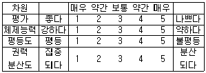
- 리커트척도(likert scale)
- 거트만척도(guttman scale)
- 의미분화척도(semantic differential scale)
- 소시오메트리척도(sociometry scale)
(정답률: 47%)
49. 특정한 구성개념이나 잠재변수의 값을 측정하기 위해 측정할 내용이나 측정방법을 구체적으로 정확하게 표현하고 의미를 부여하는 것은?
- 구성적 정의(constitutive definition)
- 개념화(conceptualization)
- 패러다임(paradigm)
- 조작적 정의(operational definition)
(정답률: 57%)
50. 다음 중 확률표집에 해당하는 것은?
- 단순무작위표집(simple random sampling)
- 편의표집(convenience sampling)
- 할당표집(quota sampling)
- 유의표집(purposive sampling)
(정답률: 55%)
51. 다음 중 할당표집(quota sampling)의 문제점과 가장 거리가 먼 것은?
- 조사자들이 조사하기 쉬운 사례들을 선택하는 경향이 있다.
- 조사과정에서 조사자의 편견이 개제될 여지가 충분히 있다.
- 확률표집이 아니기 때문에 특정 할당표집의 정확성을 평가하는 것은 어렵다.
- 확률표집에 비해서 시간과 경비가 많이 드는 편이다.
(정답률: 56%)
52. 신뢰도를 평가하는 방법이 아닌 것은?
- 반분법
- 재조사법
- 내적 일관성법
- 구성체 신뢰도법
(정답률: 54%)
53. 리커트척도에서 문항들이 단일차원을 이루는지를 확인할 수 있는 방법은?
- 재생계수 계산
- 구조방정식 모형
- 회귀분석
- 요인분석
(정답률: 44%)
54. 개념이 사회과학, 기타 조사방법에 있어 기여하는 역할과 가장 거리가 먼 것은?
- 인간의 감각에 의해 감지될 수 있는 현상에 대해서만 이해할 수 있는 방법을 제시해 준다.
- 개념은 언어나 기호로 나타내어 지식의 축적과 확장을 가능하게 해 준다.
- 개념은 연역적 결과를 가져다 준다.
- 조사연구에 있어 주요 개념은 연구의 출발점을 가르쳐 준다.
(정답률: 46%)
55. 다음 ( )안에 들어갈 가장 알맞은 것은?
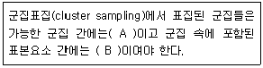
- A - 동질적, B - 동질적
- A - 동질적, B - 이질적
- A - 이질적, B - 동질적
- A - 이질적, B - 이질적
(정답률: 52%)
56. 표본추출에서 가장 중요한 요인은 무엇인가?
- 대표성과 경제성
- 대표성과 신속성
- 대표성과 적절성
- 정확성과 경제성
(정답률: 60%)
57. 다음 중 사회조사에서 측정의 의미로 옳은 것은?
- 측정이란 사물이나 사건 등의 속성에 수치를 부과하는 것이다.
- 객관적으로 파악될 수 없는 태도변수는 측정이 불가능하다.
- 반복해서 측정하여도 동일한 결과를 얻을 수 없다는 가정을 전제한다.
- 측정하고자 하는 개념이 연구자에 따라 정의가 달라질 수 없다.
(정답률: 58%)
58. 입사성적이 높은 사람이 회사에 대한 공헌도가 매우 높고 근무성적 또한 우수하다면 입사시험이라는 측정도구는 어떤 타당성이 높다고 할 수 있는가?
- 내용타당성(content validity)
- 예측타당성(predictive validity)
- 집중타당성(convergent validity)
- 안면타당성(face validity)
(정답률: 52%)
59. 편의표집(convinience sampling)에 관한 설명으로 틀린 것은?
- 모집단에 대한 정보가 전혀 없는 경우에 사용된다.
- 편의표집으로 수집된 자료라 할지라도 유용한 정보를 충분히 제공할 수 있다.
- 편의표집에 의해 얻어진 표본에 대해서는 표준오차 추정치를 부여할 수 없다.
- 표본의 크기를 확대하여 모집단의 대표성 문제를 해결 할 수 있다.
(정답률: 42%)
60. 총 학생 수가 2000명인 학교에서 800명을 표집할 때의 표집율은?
- 25%
- 40%
- 80%
- 100%
(정답률: 59%)
3과목: 사회통계
61. 표본의 수가 30이하이고 모집단의 표준편차를 모른다고 할때, 모집단 평균값의 구간추정을 위하여 주로 사용하는 분포는?
- 표준정규분포
- F-분포
- Z분포
- t-분포
(정답률: 44%)
62. 명중률이 75%인 사수가 있다. 1개의 주사위를 던져서 1 또는 2의 눈이 나오면 2번 쏘구, 그 이외의 눈이 나오면 3번 쏘기로 한다. 1개의 주사위를 한번 던져서 이에 따라 목표물을 쏠 때, 오직 한번만 명중할 확률은?
- 0.125
- 0.094
- 0.219
- 0.027
(정답률: 27%)
63. 어느 회사는 4개의 철강공급업체로부터 철판을 공급받는다. 각 공급업체들이 납품하는 철판의 품질을 평가하기 위해 인장강도(kg/psi)를 각 2회씩 측정하여 다음의 중간결과를 얻었다. 4개의 공급업체들이 납품하는 철강의 품질에 차이가 없다는 가설을 검정하기 위한 F -비는?
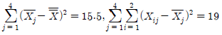
- 10.333
- 2.175
- 4.750
- 1.0875
(정답률: 28%)
64. 어떤 화학제품의 중요한 품질 특성의 하나로, 점도 Y가 문제가 되고 있다. 점도에 영향을 미치는 주요 요인인 반응온도 와의 관계를 알아보기 위하여 단준회귀분석을 실시 하기로 하였다. 20번의 실험을 하여 와 를 관측한 자료를 정리하여 다음의 결과를 얻었다. 추정된 회귀직선을 바르게 표현한 것은?
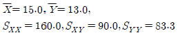
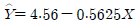
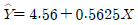
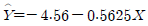
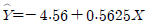
(정답률: 46%)
65. 모평균이 μ이고 모분산이  인 모집단에서 크기 n인 확률표본을 추출하였다. 모분산
인 모집단에서 크기 n인 확률표본을 추출하였다. 모분산
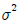
의 추정량으로 아래 주어진 두 추정량에 대한 설명으로 옳은 것은?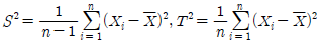
- S2은 일치추정량이고, T2은 불편추정량이다.
- S2은 불편추정량이고, T2은 편향추정량이다.
- S2은 불편추정량이고, T2은 불편추정량이다.
- S2은 편향추정량이고, T2은 일치추정량이다.
(정답률: 32%)
66. 다음 자료를 가지고 두 변수간의 상관관계를 해석하고자 할 때, 이에 대한 분석으로 옳은 것은?
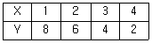
- X와 Y는 완전한 음의 상관관계이다.
- X와 Y는 완전한 양의 상관관계이다.
- X와 Y는 상관관계가 없다.
- X와 Y는 부분적 음의 상관관계이다.
(정답률: 43%)
67. A약국의 드링크제 판매량에 대한 표준편차는
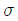
10으로 정규분포를 이루는 것으로 알려져 있다. 이 약국의 드링크제 판매량에 대한 95%신뢰구간을 오차의 한계 0.5보다 작게 하기 위해서는 표본의 크기를 최소한 얼마로 하여야 하는가?(단, 95% 신뢰구간의 Z0.025=1.96)- 77
- 768
- 784
- 1537
(정답률: 31%)
68. 다음 중 p-값(p-value)과 유의수준(significance level) α의 관계가 옳은 것은?
- p-값 > α이면 귀무가설을 기각할 수 있다.
- p-값 < α이면 귀무가설을 기각할 수 있다.
- p-값 = α이면 귀무가설은 반드시 채택된다.
- p-값과 귀무가설 채택여부와는 아무 관계가 없다.
(정답률: 41%)
69. 행변수가 M개의 범주를 갖고 열변수가 N개의 범주를 갖는 분할표에서 행변수와 열변수가 서로 독립인지를 검정하고자 한다. (i,j)셀의 관측도수를 Oij, 귀무가설하 에서의 기대도수의 추정치를
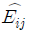
라 할 때, 이 검정을 위한 검정통계량은?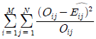
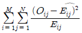
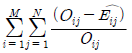
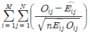
(정답률: 44%)
70. 확률변수 X의 분포가 자유도가 각각 a와 b인 F(a,b)를 따른다면 확률변수Y=1/X의 분포는?
- F(a,b)
- F(1/a,1/b)
- F(b,a)
- F(1/b,a/a)
(정답률: 40%)
71. 다음 중 두집단의 분산의 동일성 검정에 사용되는 검정통계량의 분포는?
- 정규분포
- 이항분포
- 카이제곱 분포
- F-분포
(정답률: 37%)
72. 모평균 μ를 추정하고자 크기 n인 임의표본(확률표본)을 추출하였다. 모평균 μ에 관한 신뢰구간의 길이는 표본평균  및 표본표준편차 s와 어떤 관계가 있는가?
및 표본표준편차 s와 어떤 관계가 있는가?
- 신뢰구간의 길이는
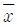
와 관계없다. - 신뢰구간의 길이는
 가 커짐에 따라 감소한다.
가 커짐에 따라 감소한다. - 신뢰구간의 길이는 s와 관계없다.
- 신뢰구간의 길이는 s가 커짐에 따라 감소한다.
(정답률: 30%)
73. 단순회귀분석에서 회귀직선의 추정식이
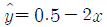
와 같이 주어졌을 때, 다음 설명 중 틀린 것은?- 반응변수는 y이고 설명변수는 x이다.
- 설명변수가 한 단위 증가할 때 반응변수는 2단위 감소한다.
- 반응변수와 설명변수의 상관계수는 0.5이다.
- 설명변수가 0 일때 반응변수의 예측값은 0.5이다.
(정답률: 40%)
74. 어떤 나무로부터 추출한 수액의 양은 평균40L, 표준편차 5L의 정규분포를 따른다고 한다. 1000그루의 나무에서 수액을 채취한다면 35L 이상 나오는 나무는 대략 몇 그루나 되겠는가? (단, P(-1<Z<1)-0.68)
- 720
- 840
- 900
- 950
(정답률: 33%)
75. 봉급생활자의 연봉과 근속년수, 학력 간의 관계를 알아보기 위하여 연봉을 반응변수로 하여 회귀분석을 실시하기도 하였다. 그런데 근속년수는 양적 변수이지만 학력은 중졸, 고졸, 대졸로 수준 수가 3개인 지시변수(또는 가변수)이다. 다중회귀모형 설정시 필요한 설명변수 개수는 모두 몇 개인가?
- 1
- 2
- 3
- 4
(정답률: 36%)
76. 다음 중 연속확률변수가 아닌 것은?
- 사랑의 체중
- 불량품 개수
- 전기사용 시간
- 곡물의 무게
(정답률: 40%)
77. 한번의 시행에서 사건 A가 일어날 확률은 1/5이다. 50번의 독립시행에서 사건 A가 나타나는 횟수의 기댓값(평균)과 분산은?
- 기대값 : 10, 분산 : 8
- 기대값 : 8, 분산 : 10
- 기대값 : 7, 분산 : 11
- 기대값 : 11, 분산 : 7
(정답률: 42%)
78. 확률변수 X 와 Y 가 독립일 때 다음 중 틀린 것은?
- E(XY) = E(X)E(Y)
- COV(X,Y) = 0
- V(X+Y) = V(X) + V(Y)
- V(X-Y) = V(Y) - V(X)
(정답률: 36%)
79. 어떤 사회정책에 대한 찬성률 θ를 추정하고자 크기 n인 임의표본(확률표본)을 추출하여 자료를 x1, .... xn으로 입력하였을 때 에 대한 정 추정치로 옳은 것은?(단, 찬성이면 0, 반대면 1로 코딩)
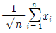
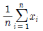
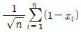
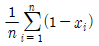
(정답률: 30%)
80. 다음은 어느 손해보험회사에서 운전자의 연령과 교통법규 위반횟수 사이의 관계를 알아보기 위하여 무작위로 추출한 18세 이상 60세 이하인 500면의 운전자 중에서 지난 1년 동안 교통법규위반 횟수를 조사한 자료이다. 두 변수 사이의 독립성검정을 하려고 할 때 검정통계량의 자유도는?
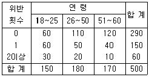
- 1
- 3
- 4
- 9
(정답률: 34%)
81. 어느 프랜차이즈 식당에서 음식을 먹기 위해 기다리는 시간은 평균 20분이고, 표준편차는 5분으로 알려져 있다. 이 식당을 방문한 어떤 손님이 5분에서 35분까지 기다릴 확률의 최소값은? (단, 체비셔프 부등식을 이용하여 추정하시오.)
- 0.0
- 0.75
- 0.89
- 0.94
(정답률: 25%)
82. 어느 고등학교에서 임의로 50명의 학생을 추출하여 몸무게(㎏)와 키(㎝)를 측정하였다. 이들의 몸무게와 키의 산포도를 서로 비교하기에 가장 적합한 통계량은?
- 평균
- 상관계수
- 변이(변동)계수
- 분산
(정답률: 35%)
83. 다음은 희귀분석 결과를 정리한 분산분석표이다. ( )안에 들어갈 A, B, C, D 값을 순서대로 나타내면?
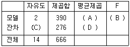
- (195, 8.48, 11, 21)
- (195, 8.48, 12, 23)
- (190, 5.21, 11, 21)
- (190, 5.21, 12, 23)
(정답률: 37%)
84. 옳은 귀무가설을 기각할 때 생기는 오류는?
- 제4종 오류
- 제3종 오류
- 제2종 오류
- 제1종 오류
(정답률: 49%)
85. 곤충학자가 70마리의 모기에게 A회사의 살충제를 뿌리고 생존시간을 관찰하여
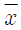
= 18.3, s = 5.2 를 얻었다. 생존시간의 모평균 μ에 대한 99% 신뢰구간은?- 8.6 < μ < 28.0
- 17.1 < μ < 19.5
- 18.1 < μ < 18.5
- 16.7 < μ < 19.9
(정답률: 20%)
86. 모집단의 확률분포가 정규분포를 따른다고 한다. 이 모집단의 확률분포에 관한 설명 중 틀린 것은?
- 모집단의 확률분포는 모평균에 대해 대칭인 분포이다.
- 모집단의 확률분포는 모평균과 모분산에 의해서 완전히 결정된다.
- 이 모집단으로부터 표본을 취할 때 표본의 관측값이 모평균으로부터 표준편차의 2배 거리 이내의 범위에서 관측될 확률은 약 95%이다.
- 분산이 클수록 모집단의 확률분포는 꼬리부분이 얇고 길게 된다.
(정답률: 35%)
87. 중회귀분석에서 회귀제곱합(SSR)이 150 이고 오차제곱합(SSE)이 50인 경우, 결정계수는?
- 0.25
- 0.3
- 0.75
- 1.1
(정답률: 39%)
88. 확률변수 X가 정규분포
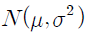
일 때의 설명으로 틀린 것은?- X의 분포는 종모양이다.
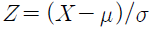
라 두면, Z의 분포는 N(0,1)이다.- X의 평균, 중위수는 일치하므로 X의 분포의 비대칭도는 0이다.
- X의 관측값이 μ-
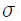
μ+ 사이에 나타날 확률은 약 95%이다.
사이에 나타날 확률은 약 95%이다.
(정답률: 30%)
89. 변수 x의 평균을
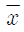
, 표준편차를 s라고 할때, 평균이 0이고 표준편차가 1 이 되는 표준화점수를 구하는 방법은?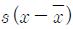
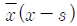
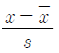
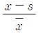
(정답률: 40%)
90. 표본으로 추출된 6명의 학생이 지원했던 여름방학․ 아르바이트의 수가 다음과 같이 정리되었다. 피어슨의 비대칭계수(p)에 근거한 자료의 분포에 관한 설명으로 옳은 것은?
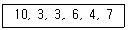
- 비대칭계수의 값이 0에 근사하여 좌우대칭형 분포를 나타낸다.
- 비대칭계수의 값이 양의 값을 나타내어 왼쪽으로 꼬리를 길게 늘어뜨린 모양을 나타낸다.
- 비대칭계수의 값이 음의 값을 나타내어 왼쪽으로 꼬리를 길게 늘어뜨린 모양을 나타낸다.
- 관측값들이 주로 왼쪽에 모여 있어 오른쪽으로 꼬리를 길게 늘어뜨린 모양을 나타낸다.
(정답률: 36%)
91. 어느 제약회사에서 생산하고 있는 진통제는 복용 후 진통효과가 나타날 때까지 걸리는 시간이 평균 30분, 표준편차 8분의 정규분포를 따른다고 한다. 임의로 추출한 100명의 환자에게 진통제를 복용시킬 때, 복용후 40분에서 44분사이에 진통효과가 나타나는 환자의 수는? (단, 다음 표준정규분포표를 이용하여 구하시오.)
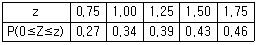
- 4
- 5
- 7
- 10
(정답률: 43%)
92. 분산분석을 위한 모형에서 오차항에 대한 가정으로 해당되지 않는 것은?
- 정규성
- 독립성
- 일치성
- 등분산성
(정답률: 42%)
93. 다음 설명 중 틀린 것은?
- 모수의 추정에 사용되는 통계량을 추정량이라 하고 추정량의 관측값을 추정치라고 한다.
- 모수에 대한 추정량의 기댓값이 모수와 일치할 때 불편추정량이라 한다.
- 모표준편차는 표본표준편차의 불편추정량이다.
- 표본평균은 모평균의 불쳔추정량이다.
(정답률: 34%)
94. 통계적 가설의 기각여부를 판정하는 가설감정에 대한 설명으로 옳은 것은?
- 표본으로부터 확실한 근거에 의하여 입증하고자 하는 가설을 귀무가설이라 한다.
- 유의수준은 제2종 오류를 범할 확률의 최대허용한계 이다.
- 대립가설을 채택하게 하는 검정통계량의 영역을 채택역이라 한다.
- 대립가설이 옳은데도 귀무가설을 채택함으로써 범하게 되는 오류를 제2종 오류라 한다.
(정답률: 44%)
95. 회귀분석에서 관찰값과 예측값의 차이는?
- 오차(error)
- 편차(deviation)
- 잔차(residual)
- 거리(distance)
(정답률: 37%)
96. 모집단에서 무작위로 표본 3개 x1, x2, x3를 추출했다. 모평균을 추정하기 위한 가장 바람직한 추정량은?
- X2
- (X1+X3)/2
- max(X1, X2, X1) - min(X1, X2, X3)
- (X1+2X2+X3)/4
(정답률: 21%)
97. 다음 중 단순회귀모형에 대한 설명으로 틀린 것은?
- 독립변수는 오차없이 측정가능 해야 한다.
- 종속변수는 측정오차를 수반하는 확률변수이다.
- 독립변수는 정규분포를 따른다.
- 종속변수의 측정오차들은 서로 독립적이다.
(정답률: 26%)
98. 다음 설명 중 틀린 것은?
- 표본평균의 분포는 항상 정규분포를 따른다.
- 모집단의 평균이 μ라고할 때, 표본평균의 기댓값도 μ이다.
- 모집단의 표준편차가
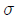
일 때, 크기가 n인 표본에서 표본평균의 표준편차는 복원추출일 경우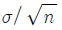
이다. - 추정량의 표준편차를 표준오차라 부른다.
(정답률: 39%)
99. 두 사건 A와 B가 서로 독립인 경우 두 사건 A와 B가 동시에 발생할 확률 P(A and B)를 바르게 표현한 것은?
- P(A and B) = P(A)P(B)
- P(A and B) = P(A) + P(B)
- P(A and B) = P(A)
- P(A and B) = P(B)
(정답률: 42%)
100. 다음 중 그 성질이 다른 것과 구별되는 것은?
- 분산
- 범위
- 변이(변동)계수
- 상관계수
(정답률: 29%)